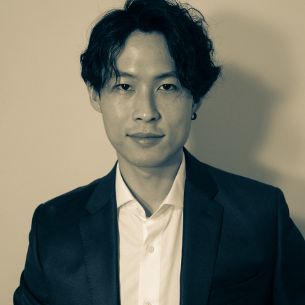

Hanbaek Lyu
Assistant Professor
Department of Mathematics, University of Wisconsin–Madison
Institute for Foundations of Data Science (IFDS) · Affiliated with UW–Madison Computer Sciences
hlyu at math dot wisc dot edu
About
I work in the fields of discrete probability and machine learning. My research is broadly driven by questions related to understanding large discrete systems such as interacting particle systems, networks, and structured random matrices.
I received my Ph.D. in Mathematics from Ohio State University in 2018, advised by David Sivakoff, with a dissertation on Combinatorial and probabilistic aspects of coupled oscillators. I hold a B.S. in Mathematics from Seoul National University. Before joining UW–Madison, I was a Hedrick Assistant Professor in the Department of Mathematics at UCLA.
Research Funding
- 2026–2031 NSF CAREER DMS-2541878 — Random Matrices, Schrödinger Bridges, Optimal Transport, and Generative Modeling
- 2026–2027 KRAFTON AI — Collaborative Research on LLM and Online Attention
- 2022–2026 NSF DMS-2206296 — Online Dictionary Learning for Dependent and Multimodal Data Samples
- 2020–2024 NSF DMS-2010035 — Combinatorial and Probabilistic Approaches to Oscillator and Clock Synchronization
Group
Postdocs
- 2025–present Ander Aguirre — Ph.D. UC Davis, 2022
- 2022–2025 David Clancy — Ph.D. UW Seattle, 2022 (former)
Ph.D. Students
- William Powell (UW Math) — expected May 2027
- Danny Duan (UW Math) — expected May 2027
- Rahul Choudhary (UW CS) — expected May 2027
- Shuqi Bi (UW Math) — expected May 2029
Former Students
- Yuchen Li (Ph.D., 2021–2025) — now Machine Learning Research Scientist at Meta